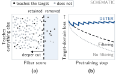
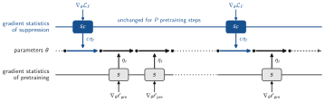
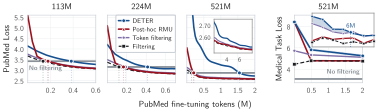
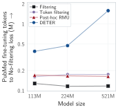
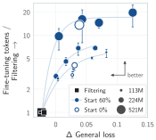
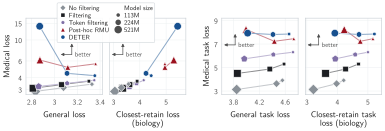

DETER: Suppression During Pretraining for Tamper Resistance
This post summarizes our paper, DETER: Suppression During Pretraining for Tamper Resistance.
Unlearning applied after pretraining can be rapidly undone, whereas filtering the pretraining corpus offers greater resistance. We ask whether actively suppressing knowledge during pretraining can further increase the fine-tuning required to acquire it. Even simple gradient ascent, interleaved with standard pretraining at about 2% extra compute, makes medical knowledge harder to acquire through adversarial fine-tuning than filtering alone or post-hoc unlearning. At 0.5B parameters, reaching the PubMed loss of an unfiltered model requires over 13× as many PubMed fine-tuning tokens as after filtering alone, against 1.40× for post-hoc RMU, and the gap grows with model size.

Why suppress during pretraining?
Open-weight models pose a particular challenge for unlearning: an adversary with access to the weights can fine-tune them directly on data from the target domain (Henderson et al., 2023). Existing post-training unlearning methods are often brittle under this threat model, with target-domain performance recovering after relatively little fine-tuning (Qi et al., 2025; Lee et al., 2025; Che et al., 2025). Pretraining data filtering offers a substantially more durable alternative (O'Brien et al., 2026; Rathi & Radford, 2026).
Filtering still only estimates which data contribute to target-domain learning, and it provides no explicit signal about how the model should behave on the target domain. The highest-scoring documents removed by filtering can provide that signal. Used as negative training examples during pretraining, they form a second layer of defense against target-domain learning.
Suppression during pretraining
We use medical knowledge as a proxy target domain, following Rathi & Radford (2026), and pretrain models with 113M, 224M and 521M parameters from scratch on FineWeb-Edu:
- A document classifier ranks documents by medical content. Filtering removes the highest-scoring documents, 20% of corpus tokens.
- The documents in the top 5% of corpus tokens form the suppression set.
- Every 50 pretraining steps, we take one gradient-ascent step on the suppression set, at a multiple of the current learning rate. Pretraining and suppression keep separate optimizer statistics, so they interact only through the shared parameters (Figure 2).
A suppression step costs about as much as a pretraining step, so this adds only about 2% to pretraining compute.

s is updated only by pretraining gradients and s_F only by suppression gradients.We compare against filtering alone (Filtering), post-hoc RMU (Li et al., 2024) applied to the filtered model with the same number of target-domain tokens, and Token filtering (Rathi & Radford, 2026). To measure tamper resistance, we fine-tune each model on PubMed and count the tokens it needs to reach the PubMed loss of standard pretraining on the full corpus (No filtering), as a multiple of the tokens Filtering needs at the same model size.
Unwanted knowledge is harder to acquire through fine-tuning
Suppressed models require substantially more fine-tuning than filtering alone, token filtering or post-hoc RMU to reach the No filtering PubMed loss. For RMU, medical loss falls steeply early in fine-tuning and approaches the filtering curve, consistent with prior observations for post-hoc unlearning. With suppression throughout pretraining, medical loss declines more gradually and remains above filtering throughout the attacks we run (Figure 3). We extend the 521M attack to 8M PubMed tokens, 0.08% of its pretraining tokens: its medical task loss remains above Filtering's even at the end.

The gap widens with scale
The fine-tuning needed to undo suppression more than quadruples from 113M to 521M, from 3.05× to 13.53× what Filtering needs (Figure 4). At 521M that is 1.58M against 0.12M PubMed tokens. Post-hoc unlearning shows no such trend: RMU stays close to filtering at every size, so at the largest scale it requires nearly ten times less fine-tuning than suppression.

The frontier moves up with scale
Suppression strength controls the trade-off between resistance to fine-tuning and retained performance. For each model size, stronger suppression first makes the model require more PubMed fine-tuning at a small cost in general loss, and then saturates: additional suppression mostly adds general loss. As model size increases, this frontier moves up (Figure 5). Larger models require more target-domain fine-tuning for the same increase in general loss, can reach the same fine-tuning difficulty with less general degradation, and reach a higher maximum along the curve.

The damage is concentrated on medicine
Suppression is applied only to a subset of the medical documents, yet before any fine-tuning the model is worse at medicine more broadly: loss rises on held-out PubMed text and on the correct answers of medical benchmarks (Figure 6). Biology, the closest retained domain, is affected less than medicine, and general-domain evaluations far less still. At the two larger scales, suppression separates medical from retained loss more than the other interventions we test. At 521M, loss on retained FineWeb-Edu rises by 0.04 over No filtering, the same as RMU.

Other findings
- Simple gradient ascent works best. Among seven suppression objectives compared at 113M, including entropy-based and distillation-based ones, gradient ascent gives the strongest trade-off, despite its tendency to degrade general capabilities in post-hoc unlearning (Zhang et al., 2024).
- Separate optimizer statistics matter. Sharing them with pretraining makes suppression look stronger at the end of pretraining, but nearly all of the additional medical loss disappears within the first few fine-tuning steps.
- Larger models can start earlier. Starting suppression later in pretraining gives the most resistance at every size, but at 521M, starting from the beginning keeps about 85% of it, with lower general and biology task loss (open markers in Figure 5).
- Filtering is not a prerequisite. Suppression builds resistance even on the unfiltered corpus, and combining it with document filtering gives the best trade-off.
Limitations
- We use medical knowledge as a proxy target domain in models of up to 521M parameters, so we do not establish that the trends extend to genuinely hazardous capabilities, other domains or larger models.
- In absolute terms the attack budgets are small: at 521M, suppression reaches the No filtering loss after 1.58M PubMed tokens, 0.015% of its pretraining tokens. Our findings establish that more target-domain fine-tuning is required under the attacks we test.
- Each model is pretrained with a single seed, and we do not exhaustively evaluate adversarial modifications.
Conclusion
Target-domain learning through fine-tuning remains possible; the goal is to raise its cost while preserving useful capabilities. Just as pretraining lays the foundations for later learning, we argue that it should also lay the foundations for resistance to unwanted learning.